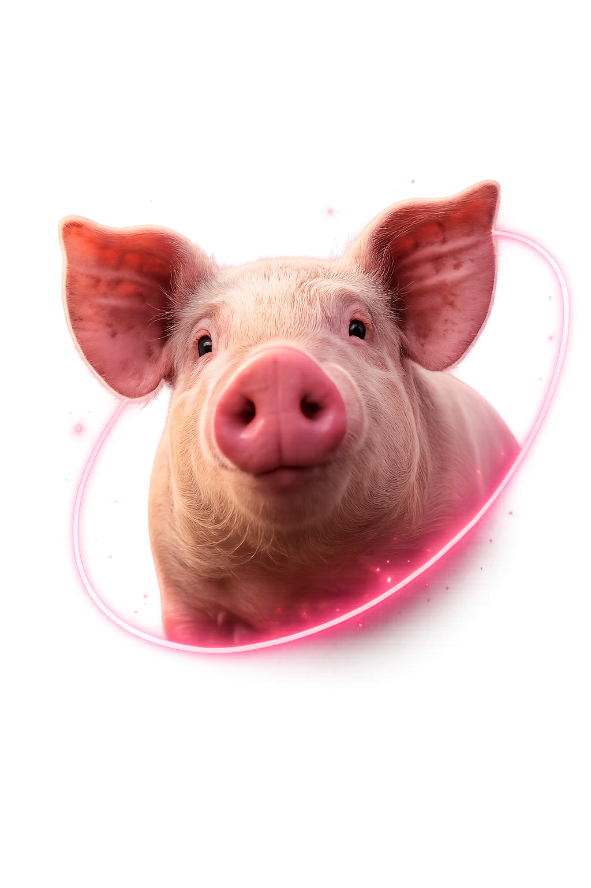
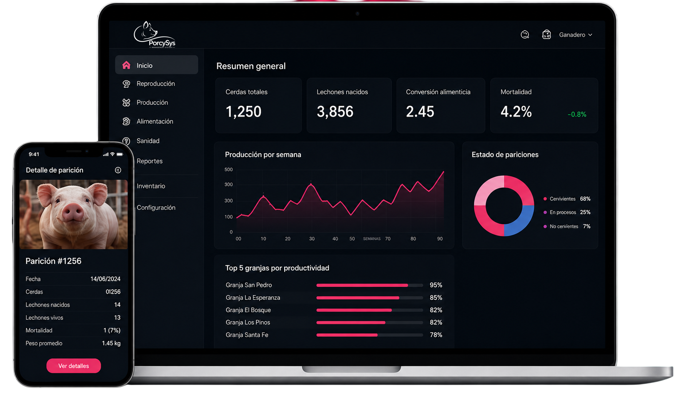
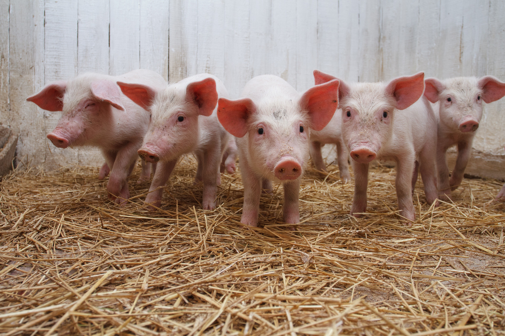

Software inteligente para una producción más eficiente, rentable y sostenible.

Granjas más rentables
Registra, analiza y toma decisiones en tiempo real desde cualquier lugar. Ahorra tiempo, reduce costos y lleva tu granja al siguiente nivel.

Tu información siempre contigo en la nube.
Protegemos tu información con altos estándares de seguridad.
Automatiza procesos y enfócate en hacer crecer tu negocio.
Decisiones basadas en datos para maximizar tus resultados.

Tus números productivos y financieros en la misma plataforma. Ingresos, gastos, costo por kilo, márgenes y proyecciones — sin hojas de cálculo, sin estimaciones.
● En línea · responde en segundos
El asistente de IA de PorcySys conversa con tus datos en lenguaje natural. Pregunta, compara y descubre patrones sin abrir un solo reporte.
Habla con tu sistema como si fuera un veterinario o gerente. Sin filtros, sin queries.
Reproducción, sanidad, alimentación y finanzas, todo en una sola respuesta.
Sugiere acciones: lotes a vender, cerdas a revisar, gastos a optimizar.
Pídelo en chat y descárgalo como PDF o Excel listo para compartir.
Demo personalizada con datos similares a los de tu granja. Sin presión.
Cuéntanos sobre tu operación y te mostramos cómo PorcySys se adapta a tu granja.
Contacto directo